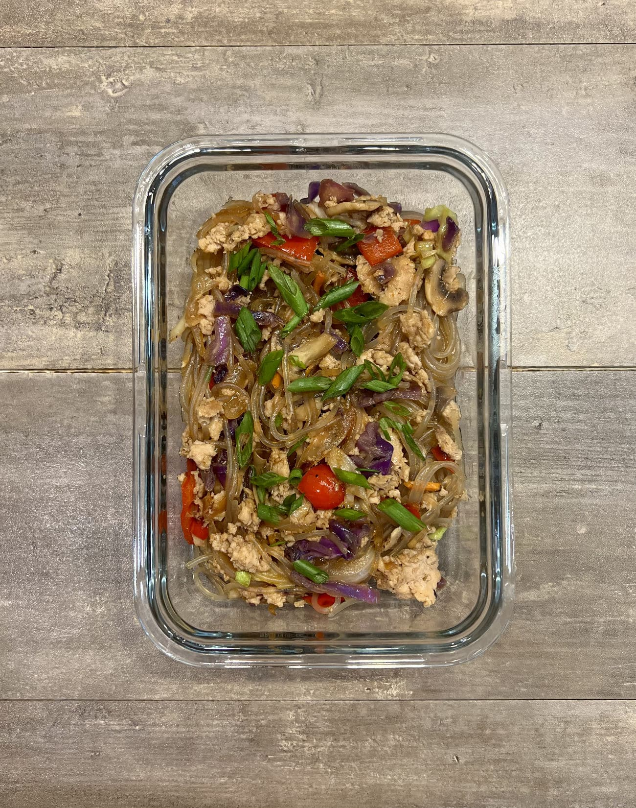

Honey Garlic Chicken Noodles
Description
Made of sweet potato glass noodles and ground chicken with a variety of vegetables.
Ingredients
For the Meat and Vegetables
- Ground Chicken
- Sweet Potato Glass Noodles
- Onion
- Red Pepper
- Mushrooms
- Shredded Cabbage
- Garlic
- Green Onion
- Oil
- Salt and Pepper
For the Sauce
- Soy Sauce
- Honey
- Oyster Sauce
- Sesame Oil
- Sriracha
Steps
For the noodles
- Place the noodles into a bowl and pour over enough hot water to submerge them. Allow them to soften while you prepare the rest of your ingredients.
For the Stir Fry
- Heat a large skillet over medium high heat and add 1 tbsp of oil and throw in the ground chicken. Season lightly with salt and pepper.
- Keep an eye on the chicken while you cut up your vegetables and tend to it as needed. Cook the chicken until it has browned and no pink remains. When finished, remove it from the skillet and set aside.
- While the chicken is cooking, wash and cut all of your vegetables. Cut the onion into thin slices, the red pepper into a large dice, the mushrooms into thin slices, shred the cabbage (if necessary), mince the garlic, and cut the tops off the green onions on a bias.
- Once the chicken has finished and you have removed it from the pan, add ½ tbsp of oil and add in the onions and peppers first. Allow these to cook and brown for a couple of minutes before adding the other vegetables.
- Make some room in the center of the pan and add another ½ tbsp of oil and the mushrooms. Allow the mushrooms to brown and release their water before you stir them around too much.
- Once the mushrooms have browned, add the cabbage and garlic. Stir to distribute everything in the pan.
For the Sauce
- In a bowl, stir together the soy sauce, honey, oyster sauce, sesame oil, and sriracha. Mix vigorously to make sure that the honey gets evenly stirred in.
Construction
- Place the skillet over medium heat. Add in the chicken and pour about half of the sauce over the top. Stir to combine so that the chicken and vegetables are coated.
- Drain the water away from the noodles and add them into the pan. Pour the remaining sauce over the top and stir. Taste test and add salt and pepper as needed.
Plating
- This recipe makes 5 servings. Divide the contents of the pan evenly between 5 containers. This meal will last up to 5 days in the fridge.